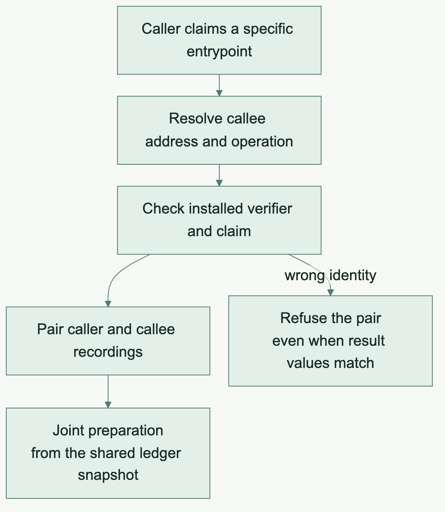

Remaining milestone · 2 min read
Cross-contract calls and the held boundary
Authenticate a call before making its syntax convenient.
The attractive surface
A generated method that calls another contract looks like a small API feature. Its semantics include the callee address, declared interface, installed operation, expected verifier, entrypoint identity, arguments, result and communication commitment.
A call that accidentally reaches a same-shaped sibling entrypoint could produce the same host result while proving a different assertion.
Start from the mainstream implementation
The owner directed the team to read and port mainstream's sequence carefully. Resolve the module and interface. Authenticate the operation and expected verifier. Enter the callee's context. Restore the caller. Propagate the result and commitment opening through the caller's witness.
This avoids inventing an independent interpretation of a cross-contract call.
What is already available
Typed address comparisons, entrypoint hash binding, native claim recording and replay are implemented prerequisites. The runtime can prepare a supplied caller and leaf-callee recording from a shared ledger snapshot.
Preparation checks the installed verifiers and the exact claim before using Ledger 9's joint partitioner. The pair-preparation tests use synthetic verifier carriers and cover honest preparation and refusal controls.
The internal compiler statement probe also produced a selected standalone caller proof with an adapter-built preimage. Same-output sibling entrypoint, wrong verifier, binding and corruption controls passed for that bounded statement.
Before and after · Two entrypoints return the same value
Before · Comparing the answer leaves an identity gap
Suppose a caller expects entrypoint A, and sibling B accepts the same arguments and also returns 7. A test that checks only the 7 would pass even if the wrong entrypoint supplied it.
After · Preparation checks which entrypoint produced the claim

The pair-preparation tests exercise the check on supplied recordings. The selected standalone statement also refuses the same-output sibling. The next section records where that check still needs to reach ordinary generated calls.
What is still held
Ordinary generated invocation of the intact caller and a real joint funded two-contract transaction remain on hold. The canonical worktree preserves three uncommitted compiler files for this direction.
Runtime preparation of supplied recordings is a useful prerequisite. It does not establish that the generated source call constructs those recordings correctly.
The eventual acceptance path
Resume with the original caller/callee fixtures, the sibling substitution test and the pinned reference implementation. Qualify generated execution in both targets. Prove both statements, independently verify them, apply the funded joint transaction, then check replay, rollback and invalid bindings.
The intact transfer model measures k=9 and belongs in an explicit slow lane.
Why this boundary improves the API
An ergonomic contract method becomes trustworthy when its ordinary call path carries the same authentication and statement identity that the low-level runtime requires. Explicit types can prevent ordinary family mix-ups. Installed state and untrusted artifacts still require runtime validation.